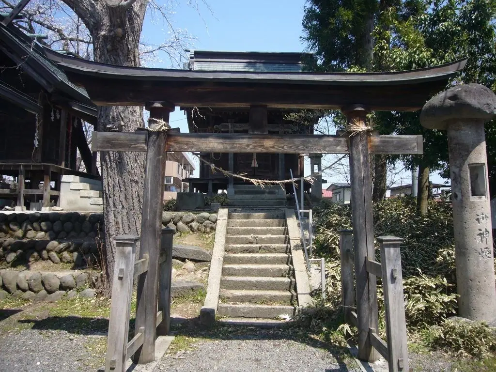
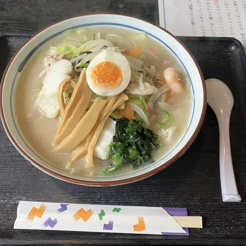
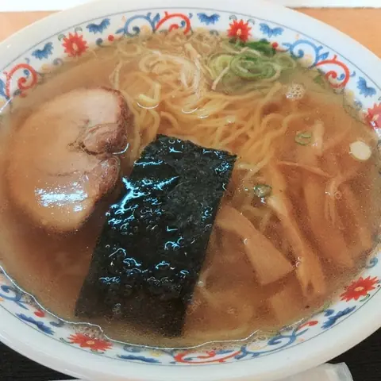
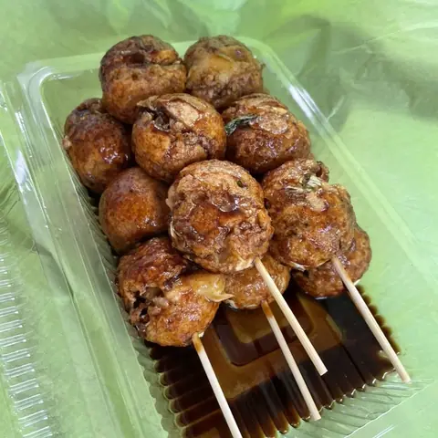
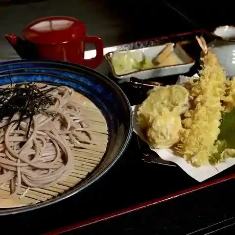
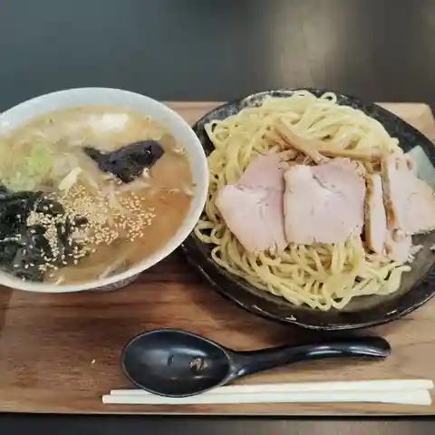
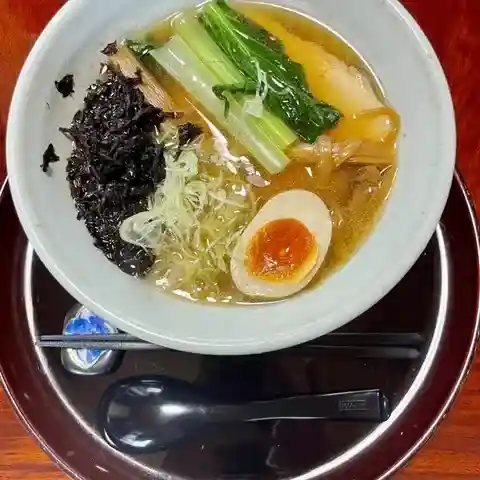

Nakayama
Nakayama · Yamagata
Nakayama
Highlighted on the Yamagata map.

Stay
ひまわり温泉ゆ・ら・ら
Himawari Onsen Yu Ra Ra
Onsen lodging in Nakayama, Yamagata.
Dining
そば処あおば
Soba Tokoro Aoba
Soba restaurant in Nakayama, Yamagata.
むら熊

Mura Kuma
Ramen shop in Nakayama, Yamagata.
さたけ 中山店

Satake Nakayama Mise
Ramen shop in Nakayama, Yamagata.
しんぼり食堂

Shinbori Shokudou
Takoyaki stand in Nakayama, Yamagata.
そば処 一聴

Soba Tokoro Itchou
Soba restaurant in Nakayama, Yamagata.
二代目天将

Nidaime Tenshou
Ramen shop in Nakayama, Yamagata.
だるまや菓子店
Darumaya Kashi Mise
Japanese sweets shop in Nakayama, Yamagata.
麺屋 寿

Men Ya Hisashi
Ramen shop in Nakayama, Yamagata.
Rea caffè
Rea Caff E
Café in Nakayama, Yamagata.
ユキヒラコーヒー
Yukihirakoohii
Café in Nakayama, Yamagata.
コション ドール
Koshon Dooru
Cake shop in Nakayama, Yamagata.
どんどん焼き 丸和
Dondon Yaki Maruwa
Local-cuisine restaurant in Nakayama, Yamagata.
ひまわり ヤマザワ中山店
Himawari Yamazawa Nakayama Mise
Ramen shop in Nakayama, Yamagata.
安田製パン所
Yasuda Seipan Tokoro
Bakery in Nakayama, Yamagata.
セブンイレブン 中山あおば店
Sebun'Irebun Nakayama Aoba Mise
Convenience store in Nakayama, Yamagata.
汽車ポッポラーメン
Kisha Popporaamen
Ramen shop in Nakayama, Yamagata.
mitate donuts
Mitate Donuts
Doughnut shop in Nakayama, Yamagata.
秋子の餃子
Akiko No Gyouza
Gyoza restaurant in Nakayama, Yamagata.
あじまん ヤマザワ中山店
Ajiman Yamazawa Nakayama Mise
Taiyaki shop in Nakayama, Yamagata.
レストラン ひまわり
Resutoran Himawari
Shokudo diner in Nakayama, Yamagata.
ファミリーマート 中山町長崎店
Famiriimaato Nakayama Chouchou Saki Mise
Convenience store in Nakayama, Yamagata.
和食処 花まる
Washoku Tokoro Hana Maru
Japanese restaurant in Nakayama, Yamagata.